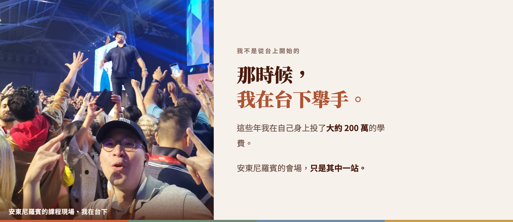
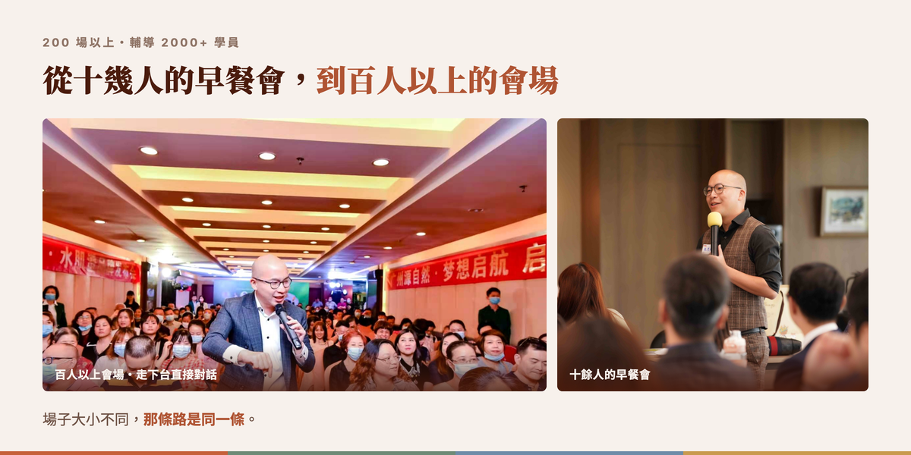
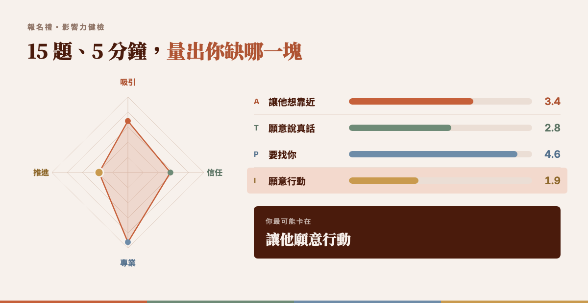

幫了那麼多人，怎麼最後才輪到自己？
上了那麼多課。靈氣、塔羅、花精、能量療癒、內在小孩，一張一張證照疊起來。
那些課是真的有用，自己的人生真的被翻動過。
身邊的人也知道。心情不好會來找你，半夜崩潰會打給你，聊完都說「跟你講完好多了」。
可是月底打開帳戶，數字跟上課以前差不多。
更讓人心寒的那件事是，帳戶裡還躺著下一張證照的學費。
而「好多了」那句話之後，通常沒有下一句。沒有人問「這個要多少錢」，也沒有開口。
於是心裡會冒出一個念頭：
是不是我還不夠格？
我懂那個念頭。因為療癒這條路上，最後一個被照顧到的，往往是療癒別人的那個人。
直到我發現一件事。
不是不夠格。
是沒有人教過，怎麼把療癒變成一條走得下去的路。
卡住的不是能力，是三個誤區
誤區一｜「等我再上一張證照，就敢收錢了」
證照是給自己安心的，客人從來不看。他看的是，坐在他面前的這一個小時，有沒有被接住。那一塊你早就有了，只是它沒有名字，也沒有價目表。
誤區二｜「他說我再想想，是他還沒準備好」
是沒有給他下一步。療癒結束，話題就停在那裡。他不知道接下來還能做什麼，也不知道要付多少。「再想想」不是拒絕，是一個沒有被接下去的句子。
誤區三｜「他說考慮看看，我就不好意思再講了，我不想給人壓力」
卻步不是尊重。
你學了這麼多身心靈的工具，你走過的那條路是獨一無二的，你已經療癒了你自己的內在小孩。可是當對方說「考慮看看」的時候，我們總是卻步。
這其實是不仁慈的。
因為他不會停在原地。沒有成交他，他就會被別人成交。而他下一個遇到的人，也許不是像你這麼好的人。被別人成交了，品質沒有人保證。你能保證的，只有你自己那一份。
所以成交是為了把你走過的那條路，複製給他。
最大的慈悲，其實是成交。
成交，一切都是為了愛。
這不是三件事，是同一條路上的三個洞
一個人願意付錢給你，不是因為你更厲害。是因為三件事同時到位：
- 他知道你在做什麼 一句話，讓他知道你能帶他去哪裡
- 他知道可以買什麼 一份講得出口的服務，有範圍、有價格
- 他知道下一步怎麼走 聊完那一刻，有一句話把他接到下一步
三個誤區，各堵在其中一個位置。證照那一關堵在第一項，「再想想」堵在第三項，而不好意思開口，堵的是這三項背後同一個東西：心裡還不相信收錢是一件好事。
所以這 90 分鐘要做的，不是再教一套療癒工具。是把「療癒」跟「收錢」之間那一段，拆開。
對照一下，是哪一種
- 個案都靠朋友介紹，介紹完就沒了 以為是「我不會行銷」，其實缺的是讓人知道你在做什麼的那一塊。
- 聊得很深、對方很感謝，但從來沒談到錢 以為是「談錢是尷尬的，會破壞身心靈體驗」，其實缺的是一份講得出口的服務。
- 對方說「我再想想」，然後就真的沒有再想了 以為是「他還沒準備好」，其實缺的是下一步。
- 都聊到最後了，卻沒有開口 以為是「我不想給人壓力」，其實缺的是把成交當成愛的那個底氣。
這四件都是可以練的，不是天賦。沒有人是「天生會」的，只是有人練過，有人沒有。
我是怎麼發現這件事的
十年前，我家裡背了兩千萬的債。
那不是我欠的，但它就在那裡。我很清楚一件事：沒有人會來救我，我只能為自己的未來拼出一條路。
我也上過身心靈的課。這些年我在自己身上投了大約 200 萬的學費，溝通與銷講 100 萬、身心靈 25 萬、財商 20 萬，再加上數不清的小課。
所以我知道那種感覺：課上完，內在鬆了，回到生活裡，錢還是沒有進來。
後來我把手上最後 100 萬拿去繳學費，飛到對岸學「怎麼開口」。回來之後做的第一件事，是隔著一個海峽，簽下一個從沒見過面的陌生客戶，120 萬。
那一刻我確定了一件事：這不是天賦，這有公式。

這張照片裡的我，在台下。我不是天生會講的人。我只是很早就決定一件事：
與其省下學費，不如把自己變成值得被投資的人。
現在我站在另外一邊。

我輔導過的人，後來怎麼了
- 一位身心靈課程創辦人：調整了說話的底層邏輯之後，課程轉換率衝到 40%。她說最大的改變是，「成交變自然了，我不用再逼自己去推銷。」
- 一位療癒師：原本月收才 4 千，上完課 36 天變現 10 萬。
- 一位企管顧問背景的身心靈工作者：一場 15 人的小場，9 位有效聽眾裡 8 位申請 1v1，完成諮詢的 3 位全數成交。她自己過去同類型銷講的成交率是 6–9%。
- 一位做一對一的工作者：學完之後，一次對話就收到 4,000 元。
- 一位學員上完課說：「其實每堂課都像身心靈課，有很多自我察覺。以前我非常不願意在別人面前表現出內心真實的想法，反而上了銷售課，慢慢學習到內外的合一。」
這些是他們各自的結果，不是這場講座的保證。寫在這裡的原因只有一個：他們原本也都覺得自己不夠格。
這一場的台下是身心靈工作者，那張牆會讓她們覺得「不是在講我」。 slot · 見證截圖 · 要老師挑三到四則
這場講座，本身就是示範
我先講白。這 90 分鐘我要教你的東西，我會當場用在你身上。
你會一邊聽，一邊發現：「等等，他剛剛那句話，是不是就是他說的那一招？」
而且到最後，我會回頭把整場拆給你看：我為什麼沒有先自我介紹、我為什麼先問你現在卡在哪、我為什麼先講兩千萬的債。
你會被完整走過一次，而且不會覺得被推銷。
因為這正是整件事的重點：不是推銷，是讓對方自己想要。
這 90 分鐘，你會帶走
- 為什麼「再上一張證照」解決不了收不到錢 三個最常見的誤區，一個一個拆
- 把你的獨特之處講成一句話 3 秒說完自己在做什麼，而且對方會想聽下去
- 把療癒變成一份講得出口的服務 有範圍、有價格、不用解釋半小時
- 不推銷的邀請句型 在問「要不要」之前的那一句話
- 當他說「考慮看看」時，心裡那一關怎麼過 成交是為了愛，這句話怎麼變成體質
- 一個可能還沒想過的問題 成交之後呢？一個人只能服務那麼多人，那怎麼辦？
這五件，就是我帶學生走的那條路。這場講座先把地圖攤開給你看。
時間軸要照新骨架重畫。 slot · 理論圖 · 骨架定了就能出
報名後，請先做一件事（5 分鐘）
報名成功後，你會收到一份影響力健檢，15 題，大約 5 分鐘。
這不是心理測驗。它會告訴你，別人在你面前想不想靠近你、願不願意跟你說真話、覺不覺得你真的能幫到他、最後願不願意行動，這四件事現在各在什麼位置。
請在講座前做完。講座中我會直接拿你的結果來講。

誰適合來
適合
- 已經在做個案或療癒，但收入一直不穩定的身心靈工作者
- 上了很多課、內在真的被翻動過，想把它變成一份收入的人
- 有在做一對一，但成交靠緣分的人
- 正職上班，想用身心靈的工具斜槓的人
- 不想推銷，但希望自己的療癒收得到錢的人
不適合
- 想找「一句話就讓對方買單」的話術懶人包的人
- 手上還沒有任何服務可以提供的人
- 認為談錢一定會破壞身心靈體驗，而且不打算改變這個看法的人
- 喜歡強迫推銷、而且覺得那樣才有效的人，這 90 分鐘教的是完全相反的方向
關於平凡人光頭・徐哲彥
ATPI 溝通 4 大肌肉框架創始人
- 從零開始 家裡背了 2000 萬的債，把最後 100 萬拿去繳學費，回來隔海簽下沒見過面的陌生客戶 120 萬
- 一對一 2 小時陌生開發，成交 20 萬
- 一對多 200 場以上演講；3 小時新品發表會 1000 萬營業額
- 帶團隊 業務團隊 6 個月 300 萬 → 3000 萬
- 帶機構 輔導一家教育機構，營收 50 萬/月 → 穩定 200 萬+/月
- 可複製 輔導超過 2000 位學員，把「怎麼開口」變成一套可以教的系統
我相信一件事：影響力不是天賦，是一塊可以練的肌肉。
把它練強，不是為了說贏誰、壓過誰，是為了讓你有能力，把你真正的價值，送進你想幫的那個人心裡。
立即報名
你的療癒沒有問題。
有問題的是，從「跟你聊完好多了」到「我要跟你買」，中間那一段，沒有人教過。
這 90 分鐘，我把那一段拆開給你看。